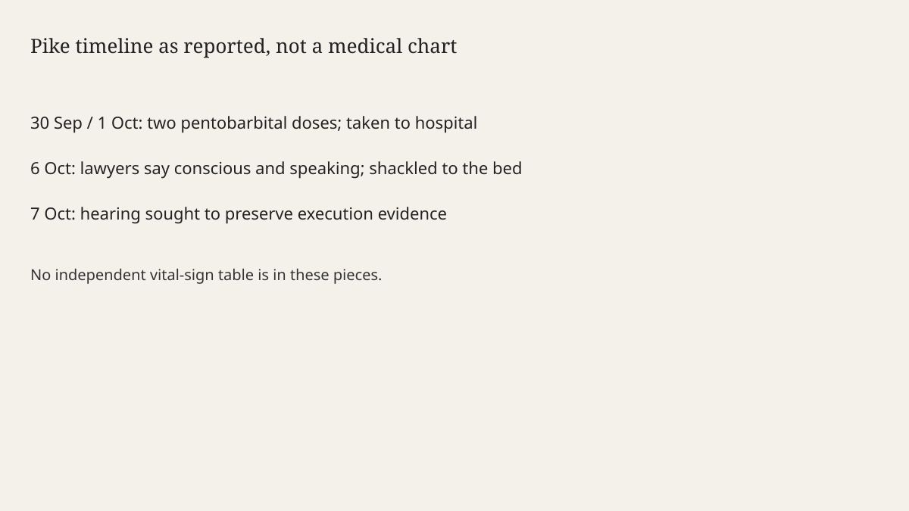

Tennessee · courts · 7 October 2026
Lawyers said Christa Pike is conscious and speaking, and they set a hearing to preserve evidence.

What is agreed across desks
Christa Pike, 50, was the person Tennessee tried to execute by lethal injection last Wednesday. The BBC and the Guardian agree on the method detail that distinguishes this attempt from several earlier stopped executions: two doses of pentobarbital were administered. She was taken to hospital. For days the accounts said she was unconscious while staff worked to clear the drug. On Tuesday 6 October her lawyers said she was conscious and speaking, still receiving critical care, and still handcuffed and shackled to the bed. The Guardian, publishing into Wednesday, says the legal team will ask a court at a Wednesday hearing to order the Tennessee Department of Correction to preserve physical, written and electronic evidence from the attempt. A press conference was also scheduled. Those are the new facts since the failed-execution day already covered in this archive.
The conviction is older and is not re-tried here. Pike was sentenced to death for the 1995 murder of Colleen Slemmer, committed with a then-boyfriend. The Guardian says she had been set to be the first woman executed in Tennessee in more than 200 years. That “set to be” describes the warrant that was not completed. It does not describe a completed execution. She is alive on the lawyers’ Tuesday statement. A living prisoner after an attempted execution is a different legal object from a death certificate.
What is only a quote
The medical status on this page comes from the defence. The BBC headline includes “lawyers say.” The Guardian leads with the attorneys’ statement: “Against all odds, Christa Pike is conscious, speaking and continues to receive critical medical care. Despite the severe damage she endured to her arms, she is still handcuffed and shackled to the bed. Her recovery is medically unprecedented. Her prognosis remains unclear but, at a minimum, we expect a long recovery.” “Unprecedented” and “severe damage” are the lawyers’ characterisations. A hospital chart is not printed in these pieces. Deborah Denno, a Fordham criminologist, told the BBC she was astonished Pike was conscious and speaking, and that Pike is the only person Denno counts for whom a toxin was actually injected in a survived execution. Denno is an expert comment. She is not the treating physician in the articles.
An earlier BBC piece quoted Dr Joel Zivot, described as retained by the defence, on the likelihood that a sufficient blood level of pentobarbital was never reached. That sentence is an expert hypothesis from a retained witness. It is not the state’s autopsy, because there is no death. Treating Zivot’s mechanism as the official cause of the failure would be a complicity error. The scored pieces mostly keep it in his mouth.
What the Wednesday hearing can and cannot do
A preservation order, if granted, keeps logs, syringes, video and messages from being discarded. It does not vacate the sentence. It does not set a new execution date. It does not declare the method unconstitutional. Those would be later motions, with different standards. The Guardian says the ask is preservation of relevant evidence. Readers who hear “hearing” as “execution cancelled” are adding a remedy the filing, as described, does not request.
The state’s interest in a preserved record is not only the defence’s. A second attempt, a clemency file, or a method challenge all need the same timestamps: when each syringe was pushed, when the curtain closed, when the heartbeat was still present. The BBC’s earlier account, citing AP witnesses, said the curtain closed twice. That witness detail is the sort of fact a preservation order is meant to freeze. It is not, by itself, a finding of cruelty or of accident. It is a sequence.
What the story is not
It is not a new trial of the 1995 murder. It is not a claim that pentobarbital never kills; it is a claim, from lawyers and one criminologist, that this administration did not kill. It is not a photograph of Pike in a hospital bed. The hero is a capitol exterior, a type of government building in the state that holds the sentence, labelled as not the prison. The second image is a timeline schematic, not a vital-signs chart, because no vital-signs table was released in the pieces used here.
Sunday’s dossier in this archive noted the failed execution and the corrections commissioner’s exit. Wednesday’s increment is consciousness as a defence statement, plus a preservation hearing. The two should not be collapsed into one “botched” adjective that does the work of a judgment.

What is still unknown
The hospital’s own note, the volume in each syringe, and the court’s ruling on preservation are not in the Tuesday statements. Until a docket entry or a clinical summary is the source, “conscious and speaking” stays inside quotation marks supplied by the lawyers, which is where the BBC already put it.
Source articles and scores
| Outlet | Headline | T | N | C |
|---|---|---|---|---|
| BBC | US death row inmate Christa Pike awake and speaking after failed execution, lawyers say | 92 | -2 | 90 |
| The Guardian | Christa Pike is conscious and speaking after botched execution attempt, lawyers say | 90 | -8 | 82 |
| BBC | US death row inmate survives execution attempt after two lethal injections | 93 | 0 | 92 |